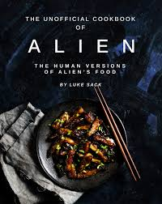
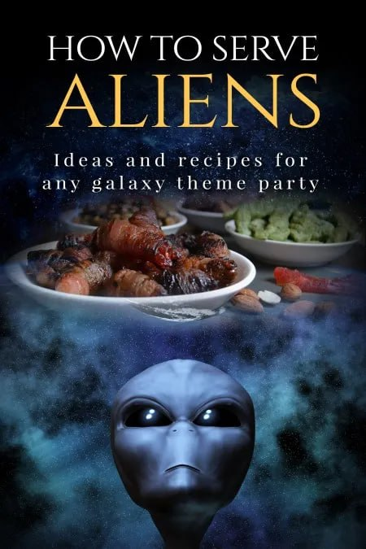

Alien cuisine on Mars will focus on sustainability, likely featuring hydroponically grown crops like lettuce, tomatoes, peppers, potatoes, and spirulina. Early diets will rely on rehydrated, nutrient-dense, shelf-stable foods, while future, long-term options might include insects or fungi cultivated from cyanobacteria.

Extraterrestrial life, are defined as beings originating from outside Earth.
while no conclusive scientific evidence confirms their existence, they are hypothesized to range from simple microorganisms to highly advanced, intelligent civilizations.
They are often imagined in science fiction as humanoid, reptilian, or insectoid reatures.

this are the ones that are mentioned